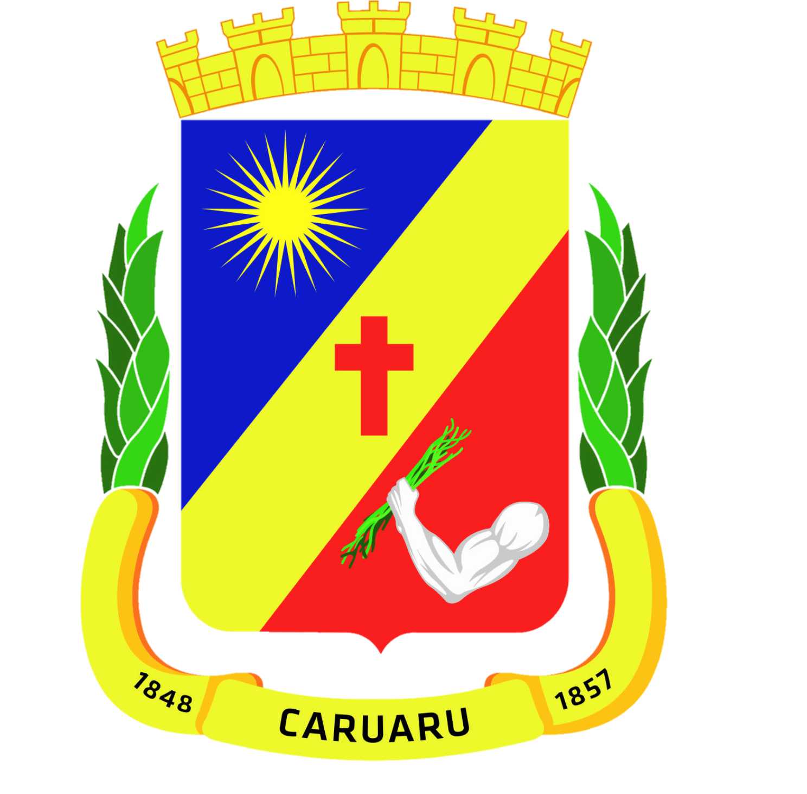

Prefeitura Municipal de Caruaru
Diário Oficial
Carregando dados…
×
Preparando a busca…
Mostrar mais diários
Últimos diários publicados
Voltar
▲
0/0
▼
Abrir PDF
Atos deste diário
◀ Ato anterior
Próximo ato ▶